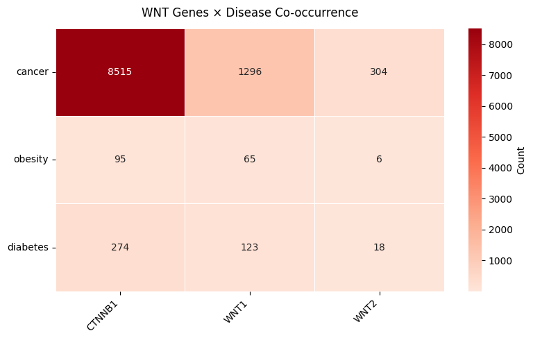
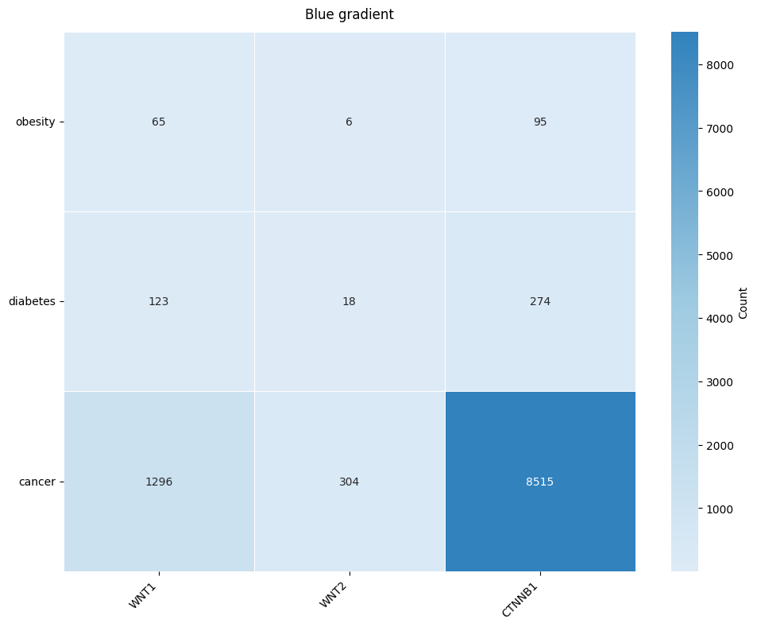
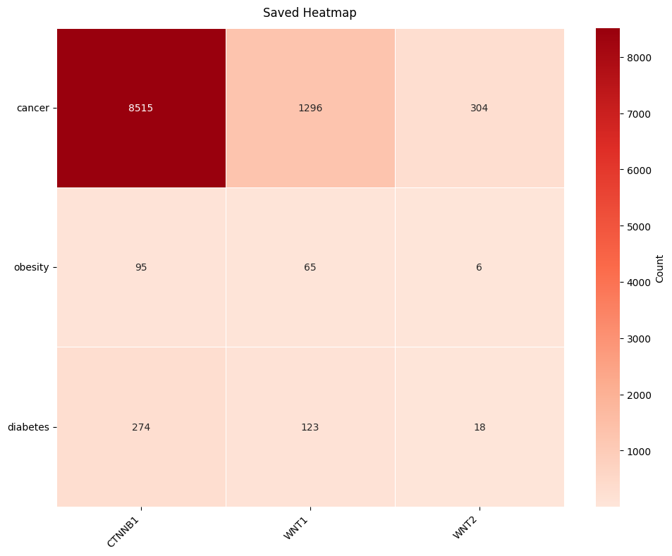

PubMatrix — Query & Visualise¶
Build a pairwise publication co-occurrence matrix with pubmatrix(), then visualise it as a heatmap.
Reference: Becker et al. (2003) BMC Bioinformatics 4:61. https://doi.org/10.1186/1471-2105-4-61
import sys
sys.path.insert(0, '..')
import pandas as pd
from pubmatrix import pubmatrix, pubmatrix_from_file, plot_pubmatrix_heatmap, pubmatrix_heatmap
Basic usage¶
A is the list of column terms, B the rows.
A = ["WNT1", "WNT2", "CTNNB1"]
B = ["obesity", "diabetes", "cancer"]
result = pubmatrix(A=A, B=B)
result
Querying NCBI: 0%| | 0/9 [00:00<?, ?query/s]
Querying NCBI: 11%|█ | 1/9 [00:00<00:06, 1.22query/s]
Querying NCBI: 22%|██▏ | 2/9 [00:01<00:04, 1.43query/s]
Querying NCBI: 33%|███▎ | 3/9 [00:02<00:03, 1.53query/s]
Querying NCBI: 44%|████▍ | 4/9 [00:02<00:03, 1.58query/s]
Querying NCBI: 56%|█████▌ | 5/9 [00:03<00:02, 1.57query/s]
Querying NCBI: 67%|██████▋ | 6/9 [00:03<00:01, 1.57query/s]
Querying NCBI: 78%|███████▊ | 7/9 [00:04<00:01, 1.59query/s]
Querying NCBI: 89%|████████▉ | 8/9 [00:05<00:00, 1.42query/s]
Querying NCBI: 100%|██████████| 9/9 [00:06<00:00, 1.39query/s]
Querying NCBI: 100%|██████████| 9/9 [00:06<00:00, 1.46query/s]
| WNT1 | WNT2 | CTNNB1 | |
|---|---|---|---|
| obesity | 65 | 6 | 95 |
| diabetes | 123 | 18 | 274 |
| cancer | 1296 | 304 | 8515 |
Using an API key¶
An NCBI API key raises the rate limit from 3 to 10 requests/second. Get yours at https://account.ncbi.nlm.nih.gov/
Date filtering¶
Querying NCBI: 0%| | 0/9 [00:00<?, ?query/s]
Querying NCBI: 11%|█ | 1/9 [00:00<00:04, 1.65query/s]
Querying NCBI: 22%|██▏ | 2/9 [00:01<00:04, 1.64query/s]
Querying NCBI: 33%|███▎ | 3/9 [00:01<00:03, 1.63query/s]
Querying NCBI: 44%|████▍ | 4/9 [00:02<00:03, 1.62query/s]
Querying NCBI: 56%|█████▌ | 5/9 [00:03<00:02, 1.63query/s]
Querying NCBI: 67%|██████▋ | 6/9 [00:03<00:02, 1.42query/s]
Querying NCBI: 78%|███████▊ | 7/9 [00:04<00:01, 1.36query/s]
Querying NCBI: 89%|████████▉ | 8/9 [00:05<00:00, 1.43query/s]
Querying NCBI: 100%|██████████| 9/9 [00:06<00:00, 1.35query/s]
Querying NCBI: 100%|██████████| 9/9 [00:06<00:00, 1.45query/s]
| WNT1 | WNT2 | CTNNB1 | |
|---|---|---|---|
| obesity | 42 | 4 | 68 |
| diabetes | 89 | 11 | 179 |
| cancer | 579 | 136 | 4404 |
PMC database¶
Querying NCBI: 0%| | 0/9 [00:00<?, ?query/s]
Querying NCBI: 11%|█ | 1/9 [00:01<00:08, 1.09s/query]
Querying NCBI: 22%|██▏ | 2/9 [00:01<00:05, 1.25query/s]
Querying NCBI: 33%|███▎ | 3/9 [00:02<00:04, 1.22query/s]
Querying NCBI: 44%|████▍ | 4/9 [00:03<00:03, 1.31query/s]
Querying NCBI: 56%|█████▌ | 5/9 [00:03<00:02, 1.42query/s]
Querying NCBI: 67%|██████▋ | 6/9 [00:04<00:02, 1.45query/s]
Querying NCBI: 78%|███████▊ | 7/9 [00:05<00:01, 1.49query/s]
Querying NCBI: 89%|████████▉ | 8/9 [00:05<00:00, 1.54query/s]
Querying NCBI: 100%|██████████| 9/9 [00:06<00:00, 1.55query/s]
Querying NCBI: 100%|██████████| 9/9 [00:06<00:00, 1.42query/s]
| WNT1 | WNT2 | CTNNB1 | |
|---|---|---|---|
| obesity | 2905 | 1074 | 5189 |
| diabetes | 4602 | 1698 | 7449 |
| cancer | 13110 | 5329 | 30827 |
Export to CSV (with PubMed hyperlinks)¶
Querying NCBI: 0%| | 0/9 [00:00<?, ?query/s]
Querying NCBI: 11%|█ | 1/9 [00:00<00:06, 1.26query/s]
Querying NCBI: 22%|██▏ | 2/9 [00:01<00:05, 1.24query/s]
Querying NCBI: 33%|███▎ | 3/9 [00:02<00:04, 1.39query/s]
Querying NCBI: 44%|████▍ | 4/9 [00:02<00:03, 1.35query/s]
Querying NCBI: 56%|█████▌ | 5/9 [00:03<00:02, 1.35query/s]
Querying NCBI: 67%|██████▋ | 6/9 [00:04<00:02, 1.43query/s]
Querying NCBI: 78%|███████▊ | 7/9 [00:05<00:01, 1.47query/s]
Querying NCBI: 89%|████████▉ | 8/9 [00:05<00:00, 1.39query/s]
Querying NCBI: 100%|██████████| 9/9 [00:06<00:00, 1.45query/s]
Querying NCBI: 100%|██████████| 9/9 [00:06<00:00, 1.40query/s]
Load terms from file¶
File format:
# Write a sample file
sample_terms = """WNT1
WNT2
#
obesity
diabetes
"""
with open("sample_terms.txt", "w") as f:
f.write(sample_terms)
result_from_file = pubmatrix_from_file("sample_terms.txt")
result_from_file
Querying NCBI: 0%| | 0/4 [00:00<?, ?query/s]
Querying NCBI: 25%|██▌ | 1/4 [00:00<00:01, 1.69query/s]
Querying NCBI: 50%|█████ | 2/4 [00:01<00:01, 1.45query/s]
Querying NCBI: 75%|███████▌ | 3/4 [00:01<00:00, 1.53query/s]
Querying NCBI: 100%|██████████| 4/4 [00:02<00:00, 1.44query/s]
Querying NCBI: 100%|██████████| 4/4 [00:02<00:00, 1.47query/s]
| WNT1 | WNT2 | |
|---|---|---|
| obesity | 65 | 6 |
| diabetes | 123 | 18 |
Heatmap visualisation¶
Use pubmatrix_heatmap() for a quick plot, or plot_pubmatrix_heatmap() for full control.
Quick heatmap¶
(<Figure size 1000x800 with 2 Axes>,
<Axes: title={'center': 'PubMatrix Results'}>)
Full heatmap with all options¶
plot_pubmatrix_heatmap(
result,
title="WNT Genes × Disease Co-occurrence",
cluster_rows=True,
cluster_cols=True,
show_numbers=True,
width=8,
height=5,
)
(<Figure size 800x500 with 2 Axes>,
<Axes: title={'center': 'WNT Genes × Disease Co-occurrence'}>)

Custom colour palette¶
plot_pubmatrix_heatmap(
result,
title="Blue gradient",
color_palette=["#deebf7", "#9ecae1", "#3182bd"],
cluster_rows=False,
cluster_cols=False,
)
(<Figure size 1000x800 with 2 Axes>, <Axes: title={'center': 'Blue gradient'}>)

Save to PNG¶
(<Figure size 1000x800 with 2 Axes>, <Axes: title={'center': 'Saved Heatmap'}>)
